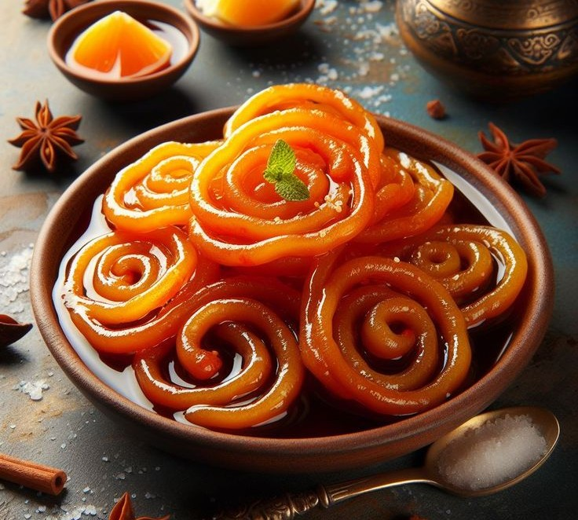

Jalebi

Description:
Jalebi is a traditional Indian sweet made by deep-frying maida batter in spiral
shapes and soaking them in saffron-infused sugar syrup. It's crispy, juicy,
and best enjoyed warm.
Prep Time:
⏱️ 45 minutes (plus 6–8 hours fermentation)
Ingredients:
- 1 cup all-purpose flour (maida)
- 2 tbsp cornflour
- 1/4 tsp baking soda
- 3/4 cup water (for batter)
- 1/2 tsp lemon juice
- Ghee or oil for frying
- 1 cup sugar
- 1/2 cup water (for syrup)
- Few saffron strands
- 1/4 tsp cardamom powder (optional)
- Few drops of orange/yellow food color (optional)
Instructions:
- Mix maida, cornflour, and baking soda. Add water slowly to make a smooth, thick batter.
- Cover and ferment the batter for 6–8 hours or overnight.
- Prepare sugar syrup by boiling sugar and water. Add saffron, cardamom, and lemon juice. Keep warm.
- Heat ghee/oil in a flat pan. Fill batter in a piping bag or squeeze bottle.
- Pipe spirals directly into hot oil. Fry on low-medium heat until crisp and golden.
- Dip hot jalebis into warm sugar syrup for 30–60 seconds, then serve immediately.